在三姓穴對面的濟州文化街一直往下走, 經過濟州島五賢詩句及三姓神話壁畫, 走了十多分鐘後, 突然間, 一座城堡迎面撲出。完全不知道濟州市山坡上有這座城堡的, 這是什麼名勝古蹟? 馬上走前看看石垣旁豎立的銘牌, 原來是濟州城址! 可算是意外收穫。
濟州城址
濟州城無法考究在什麼時期建造, 最早有關的記載可在《太宗實錄》中找到: 1411年齡(太宗11年)正月下令整修濟州城。由此可見, 濟州城的建造是在1411年之前。根據《新增東國與地勝覽》的記載, 濟州城郭周長為4,394尺, 高為11尺, 這是指山地川與屏門川之間的城郭規模, 也是現在城郭的基礎。
其後經過多次的擴建、加高城牆和修築, 成為現在所看到的濟州城牆。1925年至1928年為開發濟州碼頭時, 大部份城牆被拆掉, 用作填滿之用。而現在看到僅餘下來的濟州城牆遺跡, 就成為了解古人建築技術的珍貴材料。
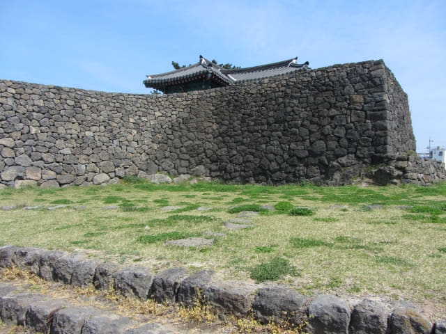
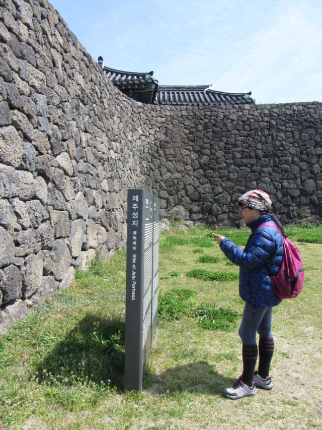
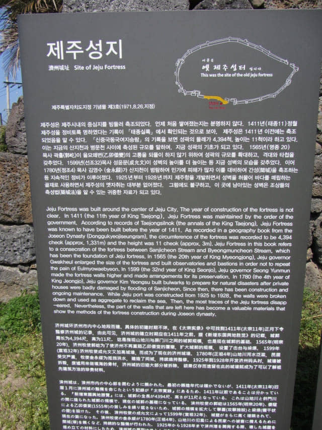
濟州城保留比較完整的只有制夷閣。
濟州城．制夷閣
制夷閣是為抵禦外敵入侵而建的樓閣。
1599年(宣祖32年)濟州牧使(地方官)成允文為抵禦外敵入侵, 在濟州城南門東側的陡峭險峻的斷崖上建立了制夷閣。從制夷閣俯瞰下去, 不僅城內、周圍山坡、河川及海岸一帶都可以一覽無遺, 並且可以在戰事中用作指揮及監察的將台。
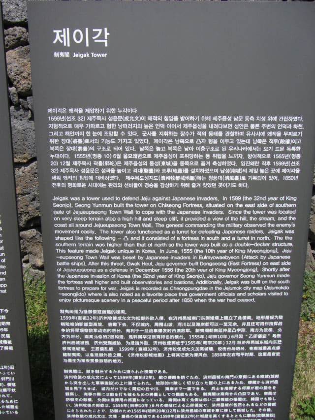
想了解濟州城址的四周環境, 最佳方法當然是登上登上制夷閣。爬上幾級高高的石階, 便登上了制夷閣。
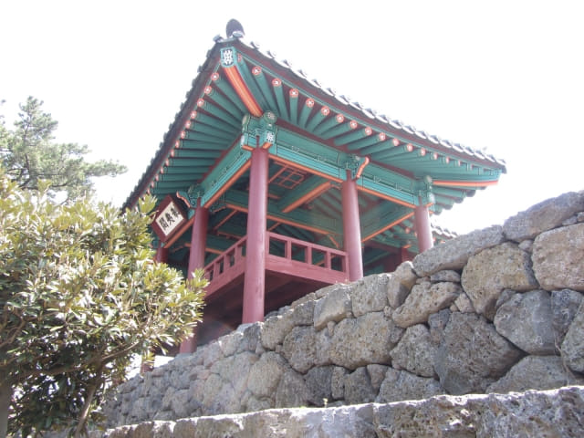
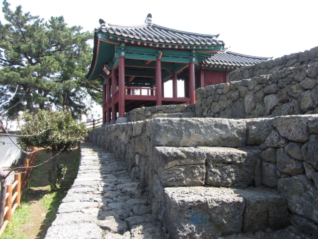
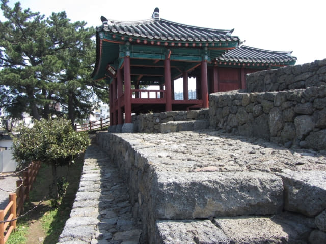
哈哈~~ 石階太高, 她爬不到上來。
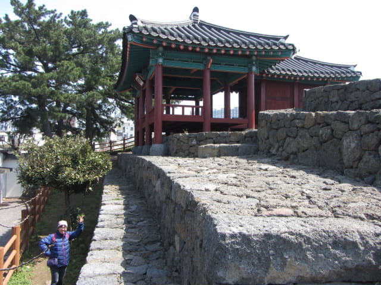
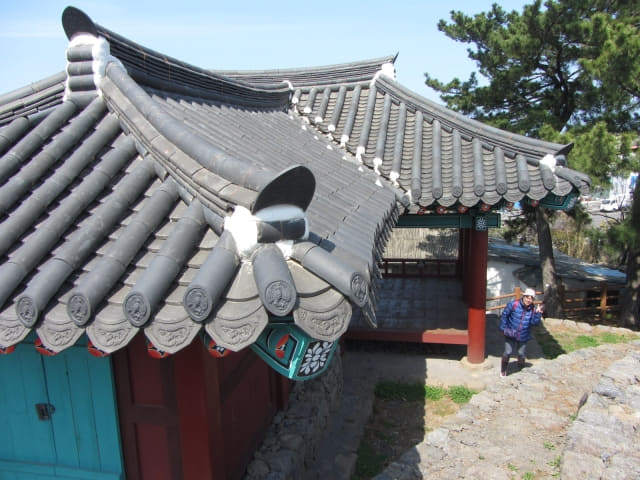
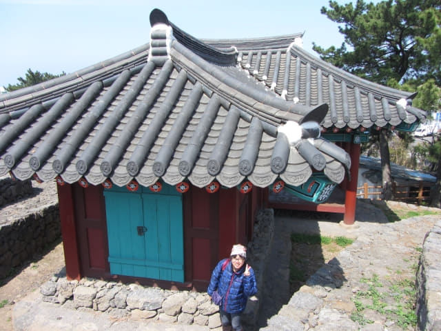
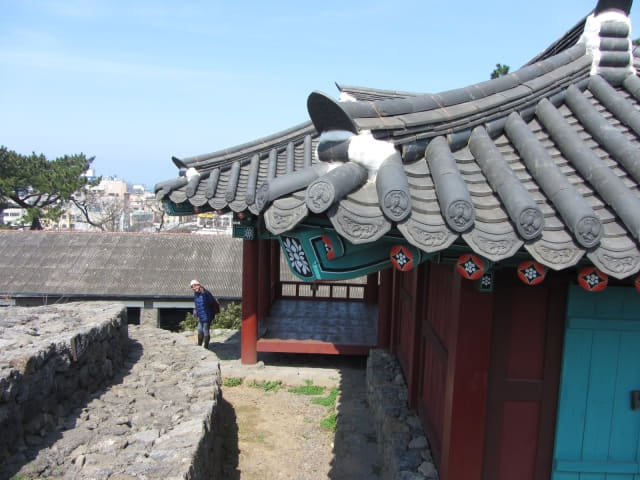
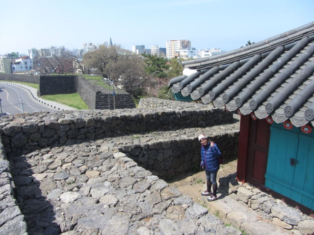
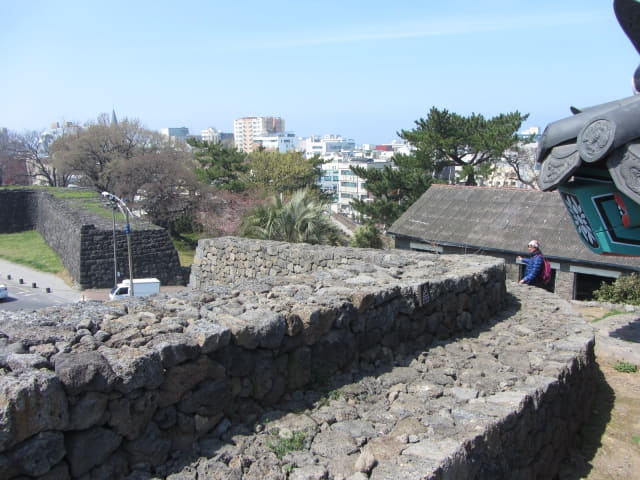
站在制夷閣上, 城郭四周一目了然。現在的濟州城址分佈在濟州文化街兩旁, 面積不大。
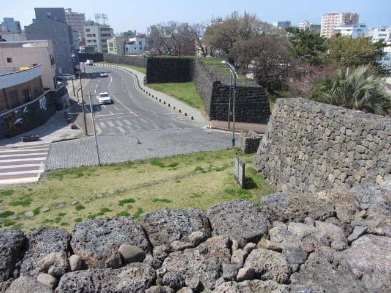
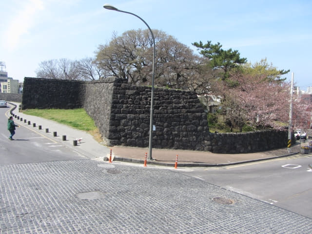
離開制夷閣, 走到濟州文化街對面的城牆看看。這裡有維護或修復工程進行中。
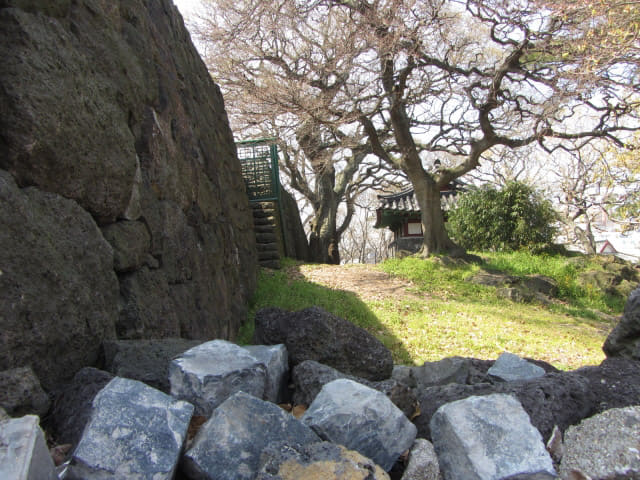
從這裡回望制夷閣。然後循濟州文化街繼續往下走。
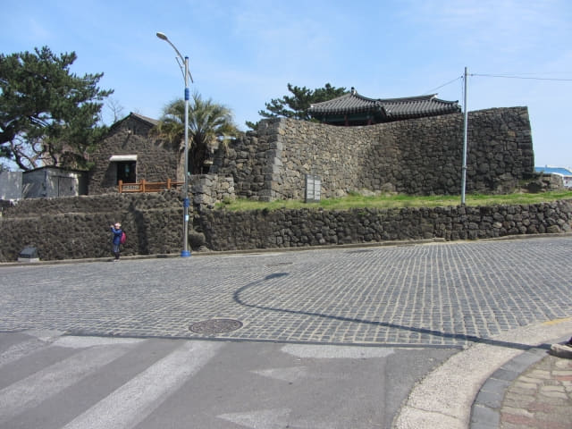
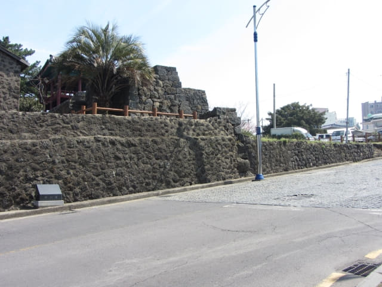
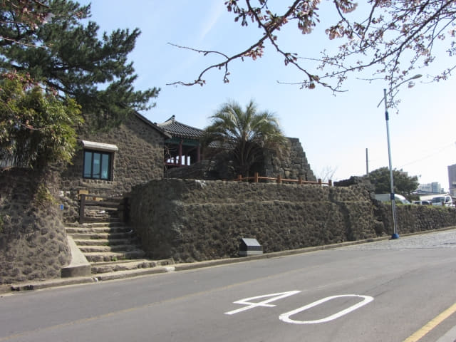
經過五賢橋。
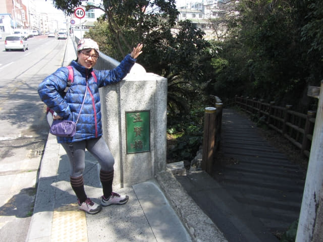
繼續沿濟州城址往下走。
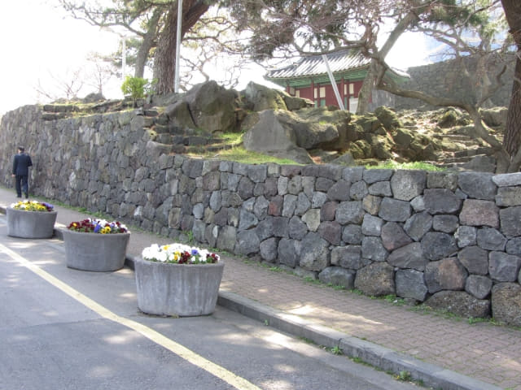
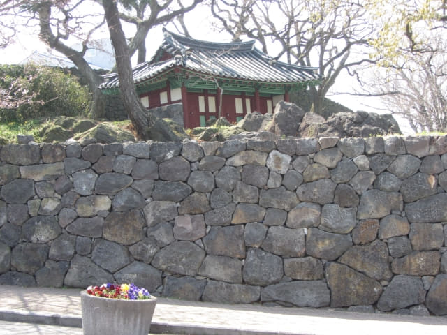
來到濟州城址山下的五賢壇。
濟州市五賢壇
五賢壇
天才少年的金淨十歲通讀四書, 十九歲中進士, 二十二歲狀元及第, 入仕後追隨趙光祖為首的士林派, 實行改革新政。1520年, 金淨捲入朝鮮中宗時代的「己卯士禍」, 起初被發配到忠清道的錦山, 期後因探望年老生病的母親, 最終被發配到濟州島, 成為政治鬥爭的犧牲品。
金淨死後24年, 終於得到平反昭雪, 恢復了過去的官職, 並於1578年在其居所遺址上建了一座沖庵廟來加以紀念; 1665年, 沖庵廟被遷往現址, 改廟為祠, 更擴大了庭園面積, 及種植了大量柑橘樹, 由於這裡原是儒生講論學問的地方, 所以重新更名為「橘林書院」, 瀛洲十景之一的「橘林秋色」就是在這裡。
後來圭庵宋麟壽(1487 – 1547)、圭庵宋麟壽(1487 – 1547)、桐溪鄭蘊(1569 – 1641)及尤庵宋時烈(1607 – 1689)等造福當地, 成為深受愛戴的賢人, 其後也被濟州人配享在此, 和金淨一起接受人們的追慕和祭祀, 合稱「五賢祠」。朝鮮末期, 書院都被裁撤, 橘林書院也未能幸免。但是熱愛他們的濟州人在這裡重新改建了一座祭壇, 名為五賢壇, 讓當地市民可以繼續供奉這些造福於當地的先賢大儒。
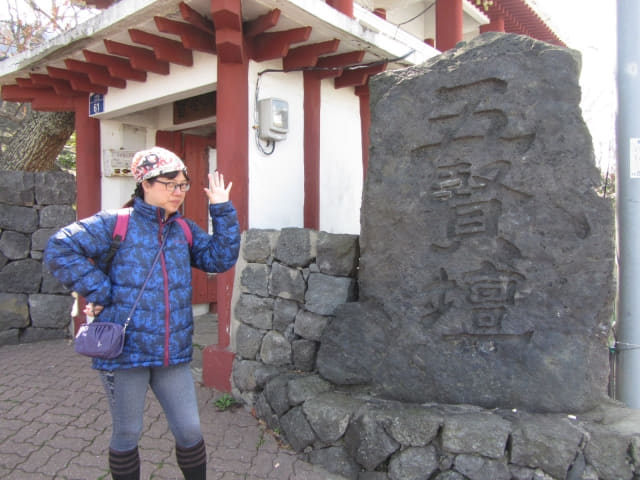

{kind=link}
{kind=link}